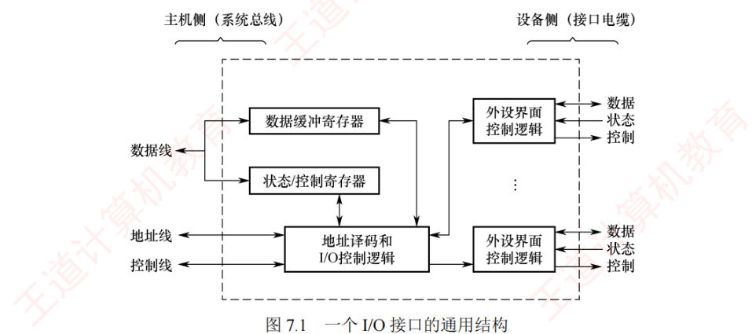

7.2 I/O接口
I/O 接口（也称 I/O 控制器）是主机与外部设备之间的交接界面，用于实现二者之间的信息交换。由于外设种类繁多，在工作方式、数据格式和工作速度等方面存在显著差异，接口正是为弥合这些异构性而设置的。本节按「功能 → 结构 → 类型 → 端口与编址」四步走，其中「接口 vs 端口」「独立编址 vs 统一编址」是选择题的常客。
7.2.1I/O 接口的功能
I/O 接口的主要功能如下：
- 地址译码与设备选择：当 CPU 发出 I/O 操作请求时，会同时提供目标外设的地址码。接口对地址进行译码，产生设备选择信号，确保主机只与指定外设通信；
- 通信与联络：主机与外设的工作速度差异悬殊，接口通过握手信号或状态轮询机制，动态协调双方操作节奏，确保数据传输可靠有序；
- 数据缓冲：接口设有数据缓冲寄存器，用于暂存传输数据，避免因速度不匹配导致的数据丢失；
- 信号格式转换：主机与外设在电平、数据格式或信号类型上可能存在差异，接口需完成电平转换、串并/并串转换、模数/数模转换等，以实现物理兼容；
- 控制命令与状态信息传递：CPU 通过向接口的控制寄存器写入命令字（如「启动」）控制外设；外设通过状态寄存器反馈状态（如「就绪」）。当外设需要主动通知 CPU（如数据到达）时，接口可向 CPU 发出中断请求，由 CPU 适时响应处理。
7.2.2I/O 接口的基本结构
图 7.1 所示为 I/O 接口的通用结构。I/O 接口在主机侧通过 I/O 总线与 CPU 和内存相连，在设备侧通过接口电缆与外设相连。其内部主要包括三类寄存器：
- 数据缓冲寄存器：用于暂存 CPU 与外设之间传输的数据；
- 状态寄存器：用于记录接口及外设的当前状态，仅被 CPU 读取；
- 控制寄存器：用于保存 CPU 发给外设的控制命令，仅被 CPU 写入。
由于状态寄存器只读、控制寄存器只写，二者的访问方向相反且访问时间错开，因此在某些设计中可复用同一端口地址，以读/写操作加以区分。

三类总线上各传什么要能张口就来：
- 数据线：传送读/写数据、状态信息、控制信息，以及中断类型号（向量中断中）；
- 地址线：传送访问 I/O 端口寄存器的端口地址；
- 控制线：传送读/写控制信号（用于区分寄存器访问方向），以及中断请求与响应信号、总线仲裁信号和设备握手信号。
I/O 控制逻辑的功能包括：① 对控制寄存器中的命令字进行译码，将生成的控制信号经外设界面控制逻辑送至外设；② 输出时，将数据缓冲寄存器的内容发送至外设；输入时，将外设数据写入数据缓冲寄存器；③ 实时采集外设状态，并更新至状态寄存器。
7.2.3I/O 接口的类型
从不同角度，I/O 接口可分为以下类型：
- 按数据传送方式（外设与接口一侧）：可分为并行接口（一个字节或一个字的所有位同时传送）和串行接口（一位一位顺序传送），接口需完成相应的并串或串并格式转换；
- 按主机访问 I/O 设备的控制方式：可分为程序查询接口、中断接口和 DMA 接口等；
- 按功能灵活性：可分为可编程接口（通过编程修改接口功能）和不可编程接口。
7.2.4I/O 端口及其编址
I/O 端口是指 I/O 接口电路中可被 CPU 直接访问的寄存器，主要包括：数据端口（支持 CPU 读/写操作）、状态端口（仅支持读操作）和控制端口（仅支持写操作）。
对上述寄存器的访问通过专用指令完成，这类指令称为 I/O 指令。在采用独立 I/O 地址空间的系统中（如 x86），I/O 指令通常为特权指令，仅限操作系统内核使用。为使 CPU 能够访问各个 I/O 端口，必须对端口进行编址，每个端口对应一个唯一的端口地址。常见的编址方式有两种：独立编址与统一编址。
1. 独立编址（I/O 映射方式）
独立编址为 I/O 端口建立一个独立于主存的地址空间，I/O 端口地址与内存地址在逻辑上完全分离，地址值可以相同，但由于属于不同地址空间，不会发生冲突。CPU 通过专用的 I/O 指令（如 x86 中的 IN 和 OUT）访问 I/O 端口，指令中的地址字段用于指定被编址的端口。
- 优点：I/O 端口数量远少于内存单元，所需地址线较少，译码电路简单，寻址速度快；使用专用 I/O 指令，使程序中 I/O 操作清晰可辨，便于阅读与测试；
- 缺点：I/O 指令功能有限，通常仅支持简单的数据传输，程序设计灵活性较差；CPU 需同时提供存储器读/写和 I/O 读/写两组控制信号，增加了控制逻辑的复杂性。
2. 统一编址（存储器映射方式）
统一编址将主存地址空间分配一部分给 I/O 端口，使 I/O 端口与内存单元共享同一地址空间。通过地址范围即可区分访问目标（如把地址段映射到 I/O 设备），因此无须专用 I/O 指令，CPU 使用通用的访存指令（如加载和存储指令）即可访问 I/O 端口。
- 优点：无须专用 I/O 指令，编程更灵活；I/O 端口可获得较大的编址空间；I/O 访问的保护机制可由虚拟存储管理系统统一实现，无须额外硬件支持；
- 缺点：I/O 端口占用主存地址空间，减少了系统可用内存容量；由于需根据完整地址判断是否为 I/O 地址，译码电路复杂，可能降低译码速度。
| 对比项 | 独立编址 | 统一编址 |
|---|---|---|
| 地址空间 | 独立于主存，地址值可与主存相同而不冲突 | 占用主存地址空间的一部分 |
| 访问指令 | 专用 I/O 指令（IN、OUT） | 通用访存指令（加载/存储等） |
| 区分依据 | 指令类型（I/O 指令 vs 访存指令）+ 不同空间 | 地址范围（落在端口区段即为 I/O） |
| 译码与速度 | 地址线少、译码简单、寻址快 | 需比对完整地址、译码复杂、可能较慢 |
| 对主存的影响 | 不占用主存容量 | 减少了系统可用内存容量 |
| CPU 控制信号 | 需存储器读/写 + I/O 读/写两组 | 与访存共用一组 |
| 程序可读性 | I/O 操作清晰可辨，便于阅读测试 | I/O 与访存指令混用，不易分辨 |
| 保护机制 | I/O 指令通常为特权指令，限内核使用 | 可由虚拟存储管理系统统一实现 |